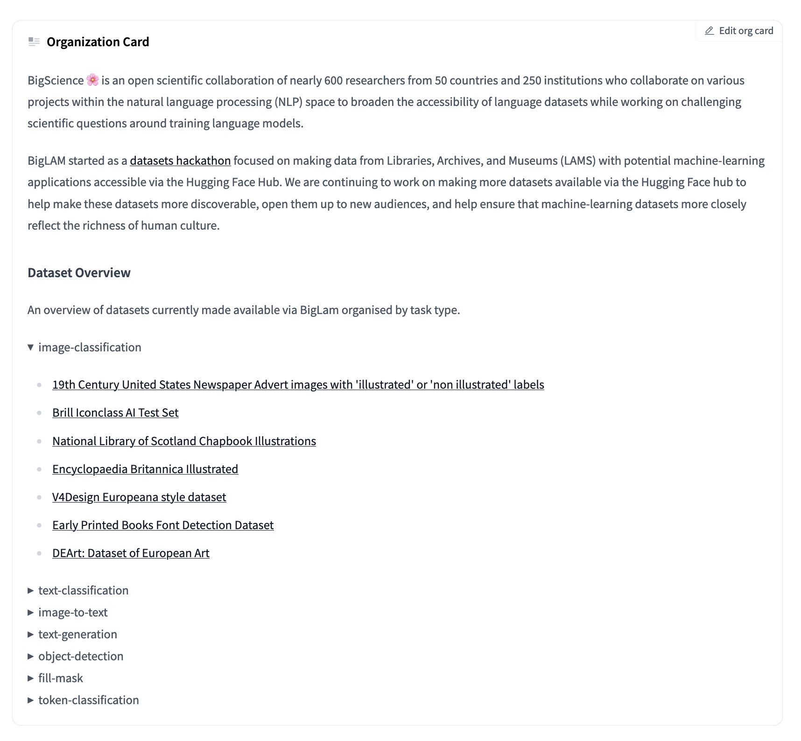

Dynamically updating a Hugging Face hub organization README
Using the huggingface_hub library and Jinja to update a README dynamically
Author
Daniel van Strien
Published
March 7, 2023
tl;dr we can use the huggingface_hub library to auto generate a model card readme for the BigLAM organization.
What are we aiming to do?
The Hugging Face hub allows organizations to create a README card to describe their organization.
Whilst you can manually create this there might be some content that would be nice to auto populate. For example, for the BigLAM organization, we’re mainly focused on collecting datasets. Since we have many tasks supported by these datasets we might want to create a list of datasets organized by task. Ideally we don’t want to have to manually update this. Let’s see how we can do this!
First we’ll install the huggingface_hub library which allows us to interact with the hub. We’ll install Jinja2 for templating and toolz because toolz makes Python infinitely more delightful!
%pip install huggingface_hub toolz Jinja2
Requirement already satisfied: huggingface_hub in /Users/davanstrien/Documents/daniel/blog/venv/lib/python3.10/site-packages (0.11.1)
Requirement already satisfied: toolz in /Users/davanstrien/Documents/daniel/blog/venv/lib/python3.10/site-packages (0.12.0)
Requirement already satisfied: Jinja2 in /Users/davanstrien/Documents/daniel/blog/venv/lib/python3.10/site-packages (3.1.2)
Requirement already satisfied: pyyaml>=5.1 in /Users/davanstrien/Documents/daniel/blog/venv/lib/python3.10/site-packages (from huggingface_hub) (6.0)
Requirement already satisfied: packaging>=20.9 in /Users/davanstrien/Documents/daniel/blog/venv/lib/python3.10/site-packages (from huggingface_hub) (23.0)
Requirement already satisfied: requests in /Users/davanstrien/Documents/daniel/blog/venv/lib/python3.10/site-packages (from huggingface_hub) (2.28.2)
Requirement already satisfied: filelock in /Users/davanstrien/Documents/daniel/blog/venv/lib/python3.10/site-packages (from huggingface_hub) (3.9.0)
Requirement already satisfied: typing-extensions>=3.7.4.3 in /Users/davanstrien/Documents/daniel/blog/venv/lib/python3.10/site-packages (from huggingface_hub) (4.4.0)
Requirement already satisfied: tqdm in /Users/davanstrien/Documents/daniel/blog/venv/lib/python3.10/site-packages (from huggingface_hub) (4.64.1)
Requirement already satisfied: MarkupSafe>=2.0 in /Users/davanstrien/Documents/daniel/blog/venv/lib/python3.10/site-packages (from Jinja2) (2.1.1)
Requirement already satisfied: urllib3<1.27,>=1.21.1 in /Users/davanstrien/Documents/daniel/blog/venv/lib/python3.10/site-packages (from requests->huggingface_hub) (1.26.14)
Requirement already satisfied: idna<4,>=2.5 in /Users/davanstrien/Documents/daniel/blog/venv/lib/python3.10/site-packages (from requests->huggingface_hub) (3.4)
Requirement already satisfied: certifi>=2017.4.17 in /Users/davanstrien/Documents/daniel/blog/venv/lib/python3.10/site-packages (from requests->huggingface_hub) (2022.12.7)
Requirement already satisfied: charset-normalizer<4,>=2 in /Users/davanstrien/Documents/daniel/blog/venv/lib/python3.10/site-packages (from requests->huggingface_hub) (3.0.1)
[notice] A new release of pip available: 22.3.1 -> 23.0.1
[notice] To update, run: pip install --upgrade pip
Note: you may need to restart the kernel to use updated packages.
We now want to group together datasets by the task(s) they support. We can use a default dict to create a dictionary where the keys are the task and the values are a list of datasets supporting that task. Note some datasets support multiple tasks so may appear under more than one task key.
from collections import defaultdict
datasets_by_task = defaultdict(list)
for dataset in big_lam_datasets: tasks = get_task_categories(dataset)for task in tasks: datasets_by_task[task].append(dataset)
We now have a dictionary which allows us to get all datasets supporting a task, for example fill-mask
How can we create a README that dynamically updates
We now have our datasets organized by task. However, at the moment, this is in the form of a Python dictionary. It would be much nicer to render it a more pleasing format. This is where a templating engine can help. In this case we’ll use Jinja.
A templating engine allows us to create a template which can dynamically be updated based on values we pass in. We won’t go in depth to templating engines/Jinja in this blog post because I’m not an expert in templating engines. This Real Python article is a nice introduction to Jinja.
from jinja2 import Environment, FileSystemLoader
We can start by taking a look at our template. Since a lot of the template I created doesn’t update, we’ll use tail to look at the bottom of the template which is dynamically updating.
!tail -n 12 templates/readme.jinja
An overview of datasets currently made available via BigLam organised by task type.
{% for task_type, datasets in task_dictionary.items() %}
<details>
<summary>{{ task_type }}</summary>
{% for dataset in datasets %}
- [{{dataset.cardData['pretty_name']}}](https://huggingface.co/datasets/biglam/{{ dataset.id }})
{%- endfor %}
</details>
{% endfor %}
Even if you aren’t familiar with templating engines, you can probably see roughly what this does. We look through all the keys and values in our dictionary, create a section for that task based on the dictionary key. We next loop through the dictionary values (which in this case is a list) and create a link for that dataset. Since we’re looping through DatasetInfo objects in the list we can grab things like the pretty_name for the dataset and dynamically create a URL link.
Create a context dictionary which we use to pass through our dictionary
context = {"task_dictionary": datasets_by_task,}
We can now render this and see how it looks
print(template.render(context))
---
title: README
emoji: 📚
colorFrom: pink
colorTo: gray
sdk: static
pinned: false
---
BigScience 🌸 is an open scientific collaboration of nearly 600 researchers from 50 countries and 250 institutions who collaborate on various projects within the natural language processing (NLP) space to broaden the accessibility of language datasets while working on challenging scientific questions around training language models.
BigLAM started as a [datasets hackathon](https://github.com/bigscience-workshop/lam) focused on making data from Libraries, Archives, and Museums (LAMS) with potential machine-learning applications accessible via the Hugging Face Hub.
We are continuing to work on making more datasets available via the Hugging Face hub to help make these datasets more discoverable, open them up to new audiences, and help ensure that machine-learning datasets more closely reflect the richness of human culture.
## Dataset Overview
An overview of datasets currently made available via BigLam organised by task type.
<details>
<summary>image-classification</summary>
- [19th Century United States Newspaper Advert images with 'illustrated' or 'non illustrated' labels](https://huggingface.co/datasets/biglam/biglam/illustrated_ads)
- [Brill Iconclass AI Test Set ](https://huggingface.co/datasets/biglam/biglam/brill_iconclass)
- [National Library of Scotland Chapbook Illustrations](https://huggingface.co/datasets/biglam/biglam/nls_chapbook_illustrations)
- [Encyclopaedia Britannica Illustrated](https://huggingface.co/datasets/biglam/biglam/encyclopaedia_britannica_illustrated)
- [V4Design Europeana style dataset](https://huggingface.co/datasets/biglam/biglam/v4design_europeana_style_dataset)
- [Early Printed Books Font Detection Dataset](https://huggingface.co/datasets/biglam/biglam/early_printed_books_font_detection)
- [Dataset of Pages from Early Printed Books with Multiple Font Groups](https://huggingface.co/datasets/biglam/biglam/early_printed_books_with_multiple_font_groups)
- [DEArt: Dataset of European Art](https://huggingface.co/datasets/biglam/biglam/european_art)
</details>
<details>
<summary>text-classification</summary>
- [Annotated dataset to assess the accuracy of the textual description of cultural heritage records](https://huggingface.co/datasets/biglam/biglam/cultural_heritage_metadata_accuracy)
- [Atypical Animacy](https://huggingface.co/datasets/biglam/biglam/atypical_animacy)
- [Old Bailey Proceedings](https://huggingface.co/datasets/biglam/biglam/old_bailey_proceedings)
- [Lampeter Corpus](https://huggingface.co/datasets/biglam/biglam/lampeter_corpus)
- [Hansard Speeches](https://huggingface.co/datasets/biglam/biglam/hansard_speech)
- [Contentious Contexts Corpus](https://huggingface.co/datasets/biglam/biglam/contentious_contexts)
</details>
<details>
<summary>image-to-text</summary>
- [Brill Iconclass AI Test Set ](https://huggingface.co/datasets/biglam/biglam/brill_iconclass)
- [Old Book Illustrations](https://huggingface.co/datasets/biglam/biglam/oldbookillustrations)
</details>
<details>
<summary>text-generation</summary>
- [Old Bailey Proceedings](https://huggingface.co/datasets/biglam/biglam/old_bailey_proceedings)
- [Hansard Speeches](https://huggingface.co/datasets/biglam/biglam/hansard_speech)
- [Berlin State Library OCR](https://huggingface.co/datasets/biglam/biglam/berlin_state_library_ocr)
- [Literary fictions of Gallica](https://huggingface.co/datasets/biglam/biglam/gallica_literary_fictions)
- [Europeana Newspapers ](https://huggingface.co/datasets/biglam/biglam/europeana_newspapers)
- [Gutenberg Poetry Corpus](https://huggingface.co/datasets/biglam/biglam/gutenberg-poetry-corpus)
- [BnL Newspapers 1841-1879](https://huggingface.co/datasets/biglam/biglam/bnl_newspapers1841-1879)
</details>
<details>
<summary>object-detection</summary>
- [National Library of Scotland Chapbook Illustrations](https://huggingface.co/datasets/biglam/biglam/nls_chapbook_illustrations)
- [YALTAi Tabular Dataset](https://huggingface.co/datasets/biglam/biglam/yalta_ai_tabular_dataset)
- [YALTAi Tabular Dataset](https://huggingface.co/datasets/biglam/biglam/yalta_ai_segmonto_manuscript_dataset)
- [Beyond Words](https://huggingface.co/datasets/biglam/biglam/loc_beyond_words)
- [DEArt: Dataset of European Art](https://huggingface.co/datasets/biglam/biglam/european_art)
</details>
<details>
<summary>fill-mask</summary>
- [Berlin State Library OCR](https://huggingface.co/datasets/biglam/biglam/berlin_state_library_ocr)
- [BnL Newspapers 1841-1879](https://huggingface.co/datasets/biglam/biglam/bnl_newspapers1841-1879)
</details>
<details>
<summary>text-to-image</summary>
- [Old Book Illustrations](https://huggingface.co/datasets/biglam/biglam/oldbookillustrations)
</details>
<details>
<summary>image-to-image</summary>
- [Old Book Illustrations](https://huggingface.co/datasets/biglam/biglam/oldbookillustrations)
</details>
<details>
<summary>token-classification</summary>
- [Unsilencing Colonial Archives via Automated Entity Recognition](https://huggingface.co/datasets/biglam/biglam/unsilence_voc)
</details>
withopen('/tmp/README.md','w') as f: f.write(template.render(context))
Updating the README on the Hugging Face Hub
This looks pretty good! It would be nice to also update the org README without having to manually edit the file. The huggingface_hub library helps us out here once again. Since the organization README is actually a special type of Hugging Face Space, we can interact with it in the same way we could for models or datasets.
from huggingface_hub import HfApifrom huggingface_hub import notebook_login
We’ll create a HFApi instance.
api = HfApi()
Since we’re planning to write to a repo we’ll need to login to the hub.
notebook_login()
We can now upload the rendered README file we created above to our biglam/README space.
If we look at our updated README, we’ll see we now have some nice collapsible sections for each task type containing the datasets for that task

After README
Next steps, whilst this was already quite useful, at the moment we still have to run this code when we want to regenerate our README. Webhooks make it possible to make this fully automated by creating a webhook that monitors any changes to repos under the BigLAM org. Would love to hear from anyone who tries this out!